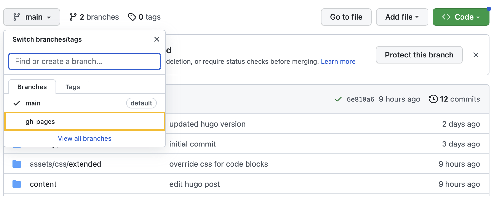
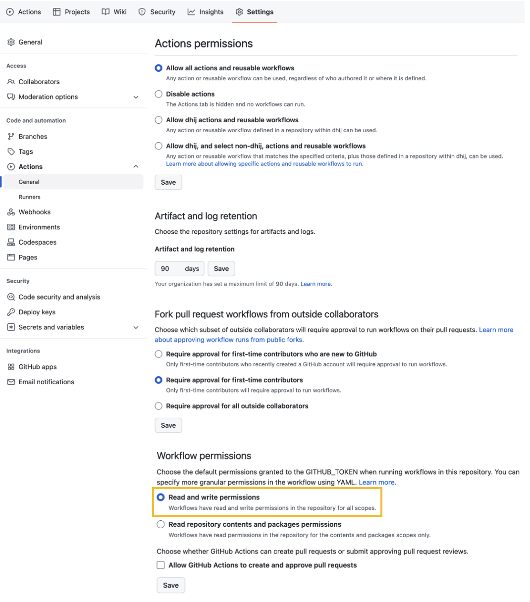
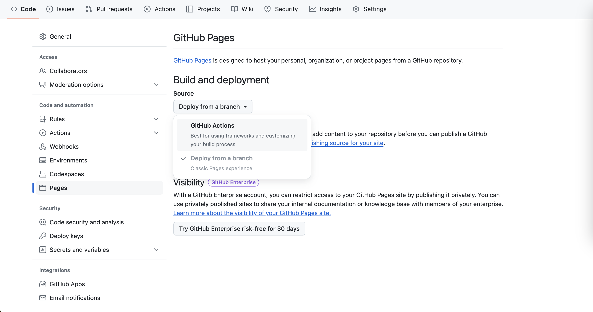
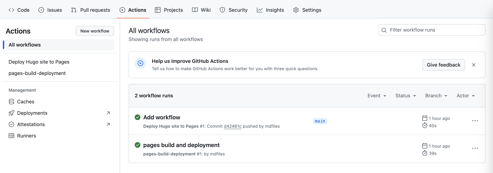

假定你的电脑已安装好Hugo，本文档可以逐行跑通，是从零开始搭建Hugo博客的简易指南
本地搭建Hugo博客
hugo new site theplaybook --format yaml
cd theplaybook
用hugo new site [博客文件夹名称]指令在当前目录下新建一个Hugo模版。--format [配置文件格式]可选的格式有yaml, toml（默认toml）
hugo new docs/test.md
git clone https://github.com/adityatelange/hugo-PaperMod themes/PaperMod --depth=1
git init
git submodule add --depth=1 https://github.com/adityatelange/hugo-PaperMod.git themes/PaperMod
hugo new docs/test.md会在/content/docs下新建一个md文件test.md
随后用git导入主题PaperMod，这两句足够完成配置，更多信息见Hugo PaperMod
vim hugo.yaml
按"I"(Insert)开始编辑，删除baseURL的内容，并在最后一行下面添加
theme: PaperMod
按Esc再输入:wq保存并退出编辑
至此Hugo博客在本地的搭建已经完成，运行hugo server指令并在网址栏输入localhost:1313就可以在本地看到博客的界面
将Hugo部署到Github Pages
GitHub Pages可用于免费托管静态网站，并且会分配一个像样的域名，比购买国内服务器和域名并备案要经济得多
首先在创建一个GitHub账号，新建一个仓库theplaybook-demo，保持默认配置项即可（Public仓库+不添加README）
步骤1: 在终端运行仓库主页代码
echo "# theplaybook-demo" >> README.md
git add README.md
git commit -m "first commit"
git branch -M main
git remote add origin https://github.com/dafuzhuu/theplaybook-demo.git
git push -u origin main
步骤2: 手动添加gh-pages分支

步骤3: 接着在Settings下的Actions/General里，滑到最下面，打开Read and Write Permissions

步骤4: 在Pages下的Build and deployment，将Source更换为GitHub Actions

步骤5: 添加workflow
导航到博客文件夹根目录
mkdir -p .github/workflows
touch .github/workflows/hugo.yaml
vim .github/workflows/hugo.yaml
接着将下面代码复制到.github/workflows/hugo.yaml
# Sample workflow for building and deploying a Hugo site to GitHub Pages
name: Deploy Hugo site to Pages
on:
# Runs on pushes targeting the default branch
push:
branches:
- main
# Allows you to run this workflow manually from the Actions tab
workflow_dispatch:
# Sets permissions of the GITHUB_TOKEN to allow deployment to GitHub Pages
permissions:
contents: read
pages: write
id-token: write
# Allow only one concurrent deployment, skipping runs queued between the run in-progress and latest queued.
# However, do NOT cancel in-progress runs as we want to allow these production deployments to complete.
concurrency:
group: "pages"
cancel-in-progress: false
# Default to bash
defaults:
run:
shell: bash
jobs:
# Build job
build:
runs-on: ubuntu-latest
env:
HUGO_VERSION: 0.128.0
steps:
- name: Install Hugo CLI
run: |
wget -O ${{ runner.temp }}/hugo.deb https://github.com/gohugoio/hugo/releases/download/v${HUGO_VERSION}/hugo_extended_${HUGO_VERSION}_linux-amd64.deb \
&& sudo dpkg -i ${{ runner.temp }}/hugo.deb
- name: Install Dart Sass
run: sudo snap install dart-sass
- name: Checkout
uses: actions/checkout@v4
with:
submodules: recursive
fetch-depth: 0
- name: Setup Pages
id: pages
uses: actions/configure-pages@v5
- name: Install Node.js dependencies
run: "[[ -f package-lock.json || -f npm-shrinkwrap.json ]] && npm ci || true"
- name: Build with Hugo
env:
HUGO_CACHEDIR: ${{ runner.temp }}/hugo_cache
HUGO_ENVIRONMENT: production
TZ: America/Los_Angeles
run: |
hugo \
--gc \
--minify \
--baseURL "${{ steps.pages.outputs.base_url }}/"
- name: Upload artifact
uses: actions/upload-pages-artifact@v3
with:
path: ./public
# Deployment job
deploy:
environment:
name: github-pages
url: ${{ steps.deployment.outputs.page_url }}
runs-on: ubuntu-latest
needs: build
steps:
- name: Deploy to GitHub Pages
id: deployment
uses: actions/deploy-pages@v4
步骤6: 上传到GitHub
git add .
git commit -m "Add workflow"
git push
